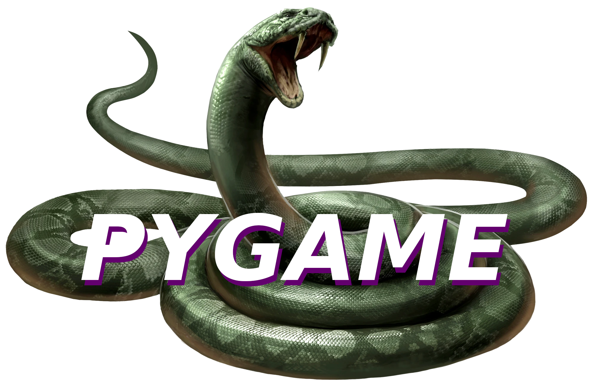
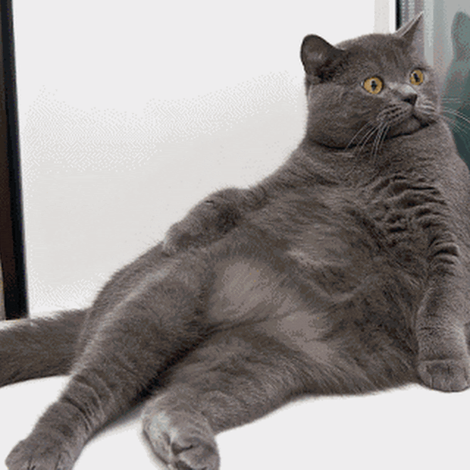
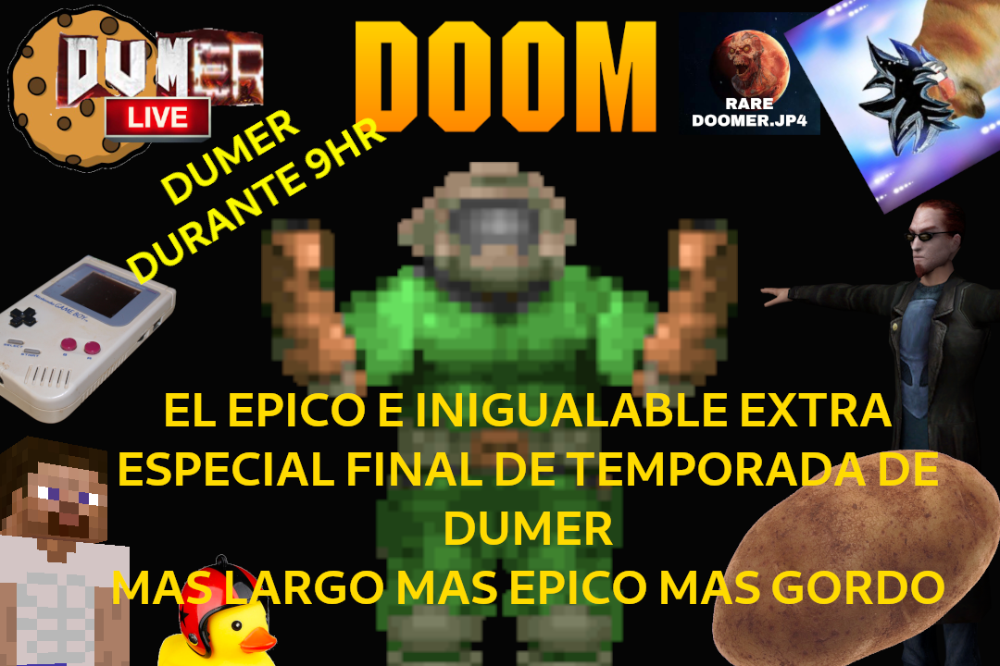

26 de Julio del año 2023 03:13PM
Sobre el videojuego de Doomer
HeyOi Internautas!
Sigo aquí, con un nuevo blog para la página, esta vez actualizando sobre el juego del canal, y que creees!!!
Ya vas a decir "Un nuevo reinicio!"
Y si mi estimado usuario intergaláctico genérico, hay un nuevo reinicio para el juego, GBS se me ha quedado corto y parece ser que no tendrá otra actualización en un tiempo, por lo que decidí cambiar a PyGame un módulo para Python el lenguaje de programación, en el que podre dar rienda suelta a mi creatividad y agregar todo lo que quiero y necesito!
Por lo que esto será un largo camino mi estimado!
Pero prometo agregar ahora si muchas más cosas de las que planeo a día de hoy, entre ellas los personajes icónicos del canal, tanto los que pertenecen a temporadas como la T3, T2, y T0 como los clásicos Evy, Elaine IA y muchos más!
Lo bueno de este reinicio es que puedo reutilizar los assets que ya cree y que he ido subiendo a IG, por lo que gráficamente no cambiara nada, lo que cambiara será la resolución y en donde se podrá jugar, decidí que por ahora el juego será exclusivo de PC, para no sobre pensar tanto en todos los demás dispositivos, por ahora eso es todo trabajaré arduamente en el código del juego! ¡Gracias por leer usuario genérico! Seeyachomp!

22 de Junio del año 2023 06:56AM
A Little Update!
¡Sigo vivo! después de un largo tiempo (Medio año) sin actualizar la página estoy de regreso! El videojuego del canal va por muy buen camino, la optimización es lo primordial en juegos para consolas tan antiguas, he vuelto a los directos recientemente después del gran épico fin de año fin de temporada! ¡Sin embargo, creo que me he quedado sin ideas para los directos no canon, una 4ta temporada de directos no creo que suceda, al menos por el momento, supongo que volveré a Doomer en Minecraft o jugaré videojuegos antiguos de la NES como hackroms y homebrews creados por la comunidad, volver a Doom siempre es una opción!
-------------------------------------------------------
01 de Enero del año 2023 03:24PM
FELIZ AÑO NUEVO USUARIO GENERICO!
Despues de un largo pero muy jodidamente largo directo especial de fin de temporada y de año puedo descansar y relajarme en esta tarde nublada de Domingo, por ahora tengo planeado crear una nueva seccion en esta pagina recomendado videojuegos retro o hackroms, siendo una de mis primeras recomendaciones el hackrom de Doom Master Edition para la PS1, continuar con el diseño de personajes para el videojuego del canal y pensar en la historia de la siguiente temporada de Doomer Live, por ahora le dare un tiempo a Doomer Live para hacer directos de Doomer en Doom y Doomer en Minecraft, eso es todo por ahora usuario generico! gracias por leer hasta pronto, Siyachomp!!!
-------------------------------------------------------
30 de Diciembre del año 2022 11:34AM
Mañana es el gran extra epico especial fin de temporada 3 fin de año 2022 del canal!
9hr de Doomer en directo desde las 5 de la tarde del dia sabado, oh jesucristo no hay nadie que me aguante por tanto tiempo, veremos que pasa, tengo planeado jugar desde Postal 2 hasta Doom, si mi computadora no explota claro esta, deberia de comprar un maldito microfono!
ayer no fue un buen dia, no me encuentro bien del todo, pero todo va estar bien, o al menos eso espero, este año a estado lleno de altas y bajas, mas bajas que altas pero bueeee, asi es la vida, una perra y despues mueres, no todo a sido malo, viaje a otros lugares conoci gente genial consegui muchas cosas que necesitaba para crear aun mas contenido, no a estado del todo mal es curioso que en el especial fin de año del 2021 dije que este 2022 seria mi año... si supieras Doomer del pasado... si supíeras...
Voy a tratar de no decir eso de nuevo, tal vez asi se haga el efecto contrario!
Por ahora voy a preparar todo para la tarde mañana, todo por terminar esta temporada 3 llena de demonios traicioneros IAs hormonales Islas robadas y demandas por todos lados!

